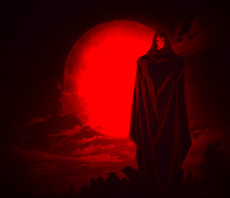
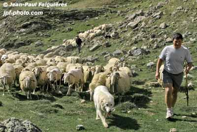
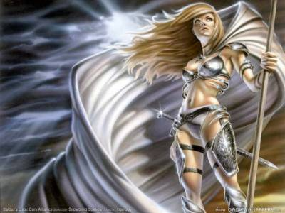
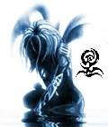
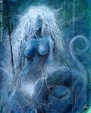
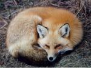
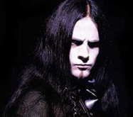
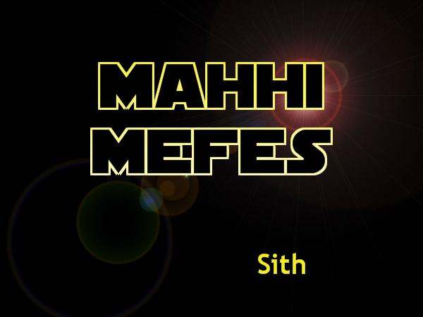

Forums galactiques > Taverne galactique : lieu de discussion informel > Recensement
Pages : 1 2
| Ariétan Réputation à la taverne : 102  28/05 ETU 22:49  | Score : 0 Détails Commandants et commandantes, je souhaiterais que chaque commandant qui fais partie de l'une des catégorie ci dessous l'indique juste sur ce sujet.
Bien respectueusement Ariétan - Zombie, Goule - Vampire - Squelette - Morts vivant diver - Spectre, fantomes - Morts - Lycantropes - Esprits, divinités Et en règle général, tout commandants relevant du domaine du surnatjrel et/ou du non-humain. | ||
| Lord bloody II Réputation à la taverne : 54  28/05 ETU 22:52 | Score : 0 Détails je suis biensur un esprit malin mais dois-je vraiment me considéré dans ces catégorie ?
de plus je connais beaucoup de fin esprits ici. | ||
| Alfirin Réputation à la taverne : 12  28/05 ETU 22:53 | Score : 0 Détails J'ai du sang de vampire dans mes veines mais je ne fais pas vraiment parti de cette catégorie ...
| ||
| Ariétan Réputation à la taverne : 102 28/05 ETU 22:56 | Score : 0 Détails Du surnaturel pardon, pas du non-humain.
Oui commandante vous n'en faite point partie mais je vous remercie de l'avoir signalé respectueusement Ariétan | ||
| Arigliano Arguello Réputation à la taverne : 560 28/05 ETU 23:30 | Score : 0 Détails /+/+/+/+/+/+/+/+/+/+/+/+/+/+/+/+/+/+/+/+/+/+/+/+/+/+/
Derrière la commandante, brusquement sortit de l'ombre Un étrange humanoïde, enveloppé dans son manteau sombre Sa race était une des plus noires de l'Histoire Et pourtant, elle existait encore, non sans gloire. Il s'approcha furtivement de la belle Se glissant derrière elle et admirant ses merveilles Il prit néanmoins soin de parler D'une voix ferme et posée. /+/+/+/+/+/+/+/+/+/+/+/+/+/+/+/+/+/+/+/+/+/+/+/+/+/+/ " Ma race est tristement connue de tous. J'espère cependant que ce recensement n'est pas pour favoriser une Inquisition. Néanmoins, je suis fier de mes origines et les voici. Je suis un Vampire Assamite de la Neuvième Génération. Je n'ai donc plus grand chose d'humain. Un jour, je raconterai à la face du monde la plus grande honte de l'Histoire de l'Humanité. Vous en saurez bientôt plus sur ma race et pourquoi nombre de gens tentèrent de la faire disparaître, ignominieusement. /+/+/+/+/+/+/+/+/+/+/+/+/+/+/+/+/+/+/+/+/+/+/+/+/+/+/ Bien plus subitement qu'il ne fut venu. Dans l'ombre il disparut. /+/+/+/+/+/+/+/+/+/+/+/+/+/+/+/+/+/+/+/+/+/+/+/+/+/+/ | ||
| Ariétan Réputation à la taverne : 102 28/05 ETU 23:46 | Score : 0 Détails Rassurez vous Commandant ce n'est point pour une quelconque opération malsaine.
Merci de vous etre signalé Bien à vous Ariétan | ||
| Paymon Réputation à la taverne : 79  29/05 ETU 02:30 | Score : 0 Détails Paymon prit la parole
Je suis... Je ne sais pas. Quelque chose du moins. Je ne suis pas un démon, bien que le nom que je me sois donné soit celui d'un archidiable, l'un des plus puissants de l'Enfer. (Paymon changeait successivement de forme à mesure qu'il parlait, chat, humain, ombre... un instant, il devenait aussi brillant que mille Soleils et quelques secondes plus tard, il était plus sombre que le désespoir des hommes.) Je ne suis pas non plus un esprit, et encore moins un fantôme, puisque je n'ai jamais été vivant. Je ne sais même pas si on pourrait me considérer comme vivant. Je connais mon père et ma mère, les deux forces annihilatrices qui ont détruit vos prédécesseurs. Pourtant, je n'ai pas l'impression d'être né. Peut-être existais-je déja, dans un autre monde, une autre dimension... Quoiqu'il en soit, j'existe, et c'est un bon début. Il se rassied puis, se ravisant, se leva et eut une légère convulsion. Il partit en fumée. | ||
| Eiganjo Réputation à la taverne : 289  29/05 ETU 07:47 | Score : 0 Détails Un chien c'est surnaturel?;)
| ||
| Sylvania Réputation à la taverne : 394  29/05 ETU 12:04 | Score : 0 Détails un chien qui parle, oui...
| ||
| Sylvania Réputation à la taverne : 394 29/05 ETU 12:13 | Score : 0 Détails Que suis-je ??
Une question que je me suis souvent posée durant ma vie... en effet je suis une enfant adoptée, mais qui sont ou plutot, que sont mes veritables parents?? mon visage et mon corps ont l'air humain, mais ma peau ne l'est pas, passant du vert des prairies calmes au vert sombre des sapins qui plient sous la tempete... Ma mère m'a dit un jour que j'etais un cadeau de la Nature. Y avait il quelques sens cachés dans cette marque d'affection ?? Les arbres me parlent et je leur répond, les oiseaux se disputent et je les apaise, le tonnerre gronde quand je suis triste, et le soleil brille quand j'ai le coeur en fete... Mes ennemis ressentent des courants d'airs glacés leur parcourir l'échine quand je les regarde, et mes amis ont une etrange impression de calme serein quand ils me cotoient... Quant aux inconnus, ils tournent leurs tetes vers moi, comme si mon existence valait la peine d'etre vue, connue, admirée peut etre ? Ce que je suis, je ne le sait pas moi-meme, mais vous, le savez plus que moi... | ||
| le renard Réputation à la taverne : -20  29/05 ETU 12:19 | Score : 0 Détails donc je suis surnaturel aussi par ce cas ...
| ||
| Koronag Réputation à la taverne : 244  29/05 ETU 12:31 | Score : 0 Détails Je suis un semi-démon,comme tous ceux de notre race,depuis sa crétaion qui remonte à la préhistoire.
| ||
| Alfirin Réputation à la taverne : 12 29/05 ETU 17:47 | Score : 0 Détails Et si vous etiez une nymphe Silvanya ?
| ||
| Huor Silimaure Réputation à la taverne : 125 29/05 ETU 17:48 | Score : 0 Détails Bonne question, moi être petit vert, oreilles grande, mais race à moi inconnue.
| ||
| Sylvania Réputation à la taverne : 394 29/05 ETU 17:52 | Score : 0 Détails peut etre... je ne le sait pas moi meme,je pense surtout que ce que je suis dépend de mes agissements envers les autres...
Si je suis bonne et aimante, je serai considèrée comme un etre bénéfique, mais imaginons que je fasse le mal, et je serai aussitot considérée comme une diablesse... En cela je ne pense pas me tromper, ce que suis dépend du regard des autres, et il existe autant de moi que de personne qui me connaissent... mais votre idée de la nymphe est interessante, bien que je n'ai pas la prétention de me trouver belle... | ||
| Alfirin Réputation à la taverne : 12 29/05 ETU 17:53 | Score : 0 Détails Les nymphes ne sont pas narcissique rassurez vous ^^ Quoique j'en ai connu certaine... Mais je ne pense pas que cela soit votre cas
| ||
| Sylvania Réputation à la taverne : 394 29/05 ETU 18:05 | Score : 0 Détails Vous etes gentille, meme si dans mon coeur, je dois vous detester... Il a fallu que nous aimions le meme homme et que vous soyez la plus prompte a cela...
Je vous avoue que votre gentillesse me fait mal, car comment puis-je vous hair alors que votre bonté vous honore ?? | ||
| Huor Silimaure Réputation à la taverne : 125 29/05 ETU 18:07 | Score : 0 Détails L'argent peut être ?
| ||
| Alfirin Réputation à la taverne : 12 29/05 ETU 18:07 | Score : 0 Détails Heuu je ne mérite pas tant de compliments...Mais je ne vous en veux pas de me haïr, c'est compréhensible...
| ||
| Roi Liche Réputation à la taverne : -6  29/05 ETU 18:58 | Score : 0 Détails Je suis un Sith Mon nom: Mahhi Mefes.
|
Pages : 1 2
Forums galactiques > Taverne galactique : lieu de discussion informel > Recensement